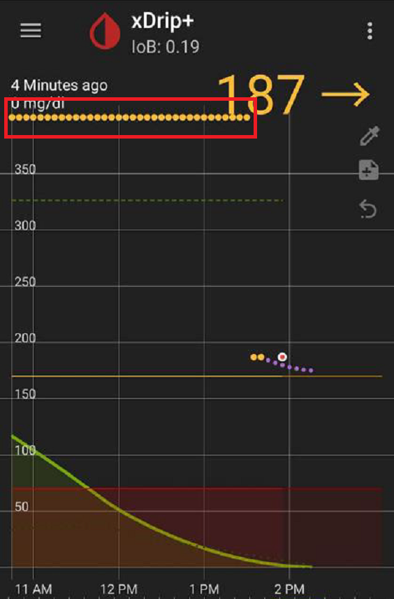
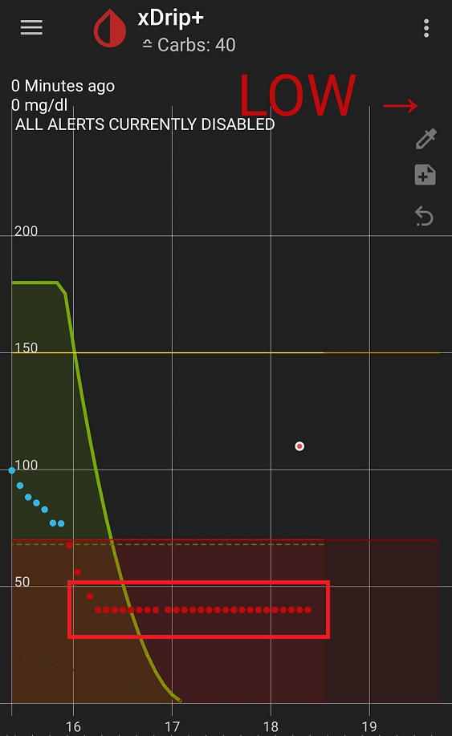

Calibration basics
About calibration⌁
How do sensors work?⌁
Glucose sensors generate an electrical signal from a chemical reaction with interstitial fluid glucose concentration, we usually call it raw data in xDrip+.
This value is not directly useable as a blood glucose measurement.
There is a physiological "delay" between capillary blood glucose and interstitial glucose concentrations and they tend to be proportional after a certain time. We assume 10 minutes at stable BG is a reasonable time to reduce inaccuracy.
In order to use raw data as blood glucose equivalent you need to give it a reference. Unless the sensor has a native calibration computation (also called factory calibration) it will not match real BG.
Proprietary calibration algorithms⌁
Some vendors provide factory calibrated sensors (G6 and Libre) that might fail to reach the expected accuracy. Where the first one allows you to apply native mode calibration, the second cannot be calibrated with the vendor app.
Native mode calibration⌁
G6 sensors are factory calibrated, you will enter the calibration code at startup. Should you want to calibrate, xDrip+ will only send the calibration data to the sensor transmitter for elaboration: it will not apply any local algorithm. xDrip+ in native mode relies on the transmitter data, this is why your receiver (if you own one) will display the same data.
More information here.
When calibrating is dangerous⌁
Calibrating when BG is not stable will generate bad calibrations hence bad BG data you cannot rely on.
Calibrating at flat curve BG is extremely dangerous as this means your sensor is out of range or mulfunctioning and raw data doesn't represent blood glucose at all.


xDrip+ calibration algorithm⌁
Intercept⌁
If you measure your blood glucose with a glucometer and it shows 130 mg/dl stable and 10 minutes after your CGM reads 100 you will want to calibrate. This is how to tell xDrip+ that a raw value of 130 means a real value of 100.
Calibrating in these conditions will show a calibration graph theoretically looking like this:
Which translates as: calibrated BG will be raw value minus 30.
-30 is called the intercept, that is an offset between raw value and calibrated BG.
Intercept will weight more on lower BG measurement, it is recommended to have it as accurate as possible to make sure xDrip+ is accurate in the low range, that is used for your safety.
Perform sensor first calibration with BG stable in the lower normal range (90 to 120 mg/dl - 5 to 7 mmol/l).
The value of intercept will move your calibrated BG up and down.
Slope⌁
Using the calibration above, you might have inaccuracy with readings when raw value is very different ... for example xDrip+ will display 170 mg/dl and your glucometer 205 mg/dl. The offset is different with higher BG in this case... it is raw value plus 5...
In order to make xDrip+ accurate in this BG range, you need to add another calibration point. Once done your curve will change theoretically like this:
You see the red line is steeper and the slope parameter increased. In this case, a slope of 1.5 means a smaller variation in raw value will make a larger variation in BG value displayed by xDrip+.
Slope will weight more on higher BG measurement, if you need accuracy on higher BG values add a calibration point in the upper range.
Add a higher calibration value at stable higher BG in the upper normal range, do not use too high blood glucose to calibrate (180 to 220 mg/dl - 10 to 12 mmol/l).
This slope is a coefficient that multiplies raw value, it is similar to a gain. It will increase or decrease BG sensitivity to raw data.
Maths, models and real life⌁
Your calibration curve is the result of a mathematical calculation that tries to find a line that fits the best all provided calibration points, minimizing the distance between each point and the theoretical line.
Its quality will depend on your sensor and your calibration strategy.
If your sensor is noisy or you don't calibrate at stable BG, the algorithm will have difficulties to fit all data and result in an inaccurate calibration curve: you can't get a line to be close to all points in a cloud of calibrations.
Interstitial "delay"⌁
This is probably the most complex factor to take into account when calibrating, this is why stable BG is key.
There is a delay between capillary BG and interstitial liquid glucose concentration, there are also other parameters that will make it evolve differently, like physical activity, ...
Since this delay can't be known nor guessed by xDrip+, calibrating with fast changing BG will not work.